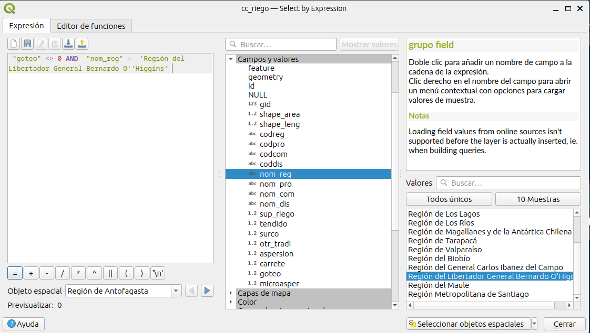

Operaciones Espaciales con Datos Vectoriales
Introducción a la Tecnología de Información Geográfica
1 Introducción
Al trabajar con datos vectoriales o raster es necesario aplicar diferentes operaciones o procesos sobre ellos que nos permiten modificarlos geométricamente de acuerdo a los objetivos del trabajo que deseamos realizar. Los software SIG como QGIS tienen diferentes operaciones implementadas que se pueden aplicar a modelos de datos geoespaciales vectoriales y rasters.
2 Objetivo
Utilizar operaciones espaciales a datos vectoriales.
3 Datos
Riego Censo Agropecuario 2007: datos recopilados para el censo agropecuario del año 2007 a nivel de distrito censal respecto a la superficie de riego a lo largo de Chile.
Distritos en la región de Ñuble: distritos censales ubicados en la región de Ñuble respecto a información recopilada para el censo agropecuario del año 2007.
Polígonos selección: polígonos de circulos y un rectangulo, creados a modo de ejemplo para ejemplificar las diferentes operaciones de selección por localización.
4 Actividades
4.1 Selección por atributos
P1. Haga una selección por atributos que permita seleccionar los distritos censales que tienen una superificie de riego por goteo distinta de 0 y que pertenezcan a la región de O’Higgins. Guardelo en un archivo geopackage en SRC geográficas datum WGS84.
Solución:
- Cargue la capa
cc_riegoen QGIS
- Abra la tabla de atributos
- Haga clic en el
seleccionador de objetos espaciales utilizando expresión
- Escriba la expresión utilizando operadores algebraicos y lógicos que permite seleccionar los distritos que perteneces a la región de O’Higgins y su superficie de riego no es cero.
“sup_riego” <> 0 & “nom_reg” = ‘Región del Libertador General Bernardo O’‘Higgins’

Verifique que la expresión ingresada no generé algun error, luego haga clic en
seleccionar objetos espacialesy después cierre la ventana del seleccionador por expresión.Ahora está en la tabla de atributos dónde están seleccionados los distritos censales de acuerdo a la expresión ingresada. Sin embargo, puede que en la tabla de atributos no apareza ningun objeto espacial seleccionado. Esto se debe a que usted sólo ve una parte mínima de la tabla de atributos. En la parte inferior izquierda haga clic en
Mostrar objetos espaciales seleccionados.
- Ahora la tabla de atributos le mostrará sólo los objetos seleccionados, los que se encuentran destacados en azul.
- Ahora puede hacer clic en el menu de la tabla de atributos, dónde dice
Acercar mapa a las filas seleccionadas

- Ahora puede cerrar la tabla de atributos y verá en el lienzo de QGIS todos los distritos seleccionados que cumplen la condición definida.
Ahora guarde el resultado de la operación con nombre de capa
seleccion_1en un archivo geopackage con nombreselecciones_por_atributos.gpkg.Primero vamos a seleccionar
exportar los objetos espaciales seleccionados.
- Seleccione como
formato: Geopackage, comonombre de archivo: selecciones_por_atributos, comonombre capa: seleccion_1y comoSRC: EPSG:4326. Luego haga clic enAceptar. Ya tiene guardados los distritos seleccionados en una capa en un archivo geopackage.
P2. Haga una selección por atributos que permita seleccionar los distritos censales que tienen una superificie de riego por goteo distinta de 0 o que pertenezcan a la región de O’Higgins. Guardelo en un archivo geopackage en SRC geográficas datum WGS84.
- La selección que debe realizar acá es muy similar a la anterior, sólo debe cambiar la expresión utilizada del paso (4) anterior:
“goteo” <> 0 OR “nom_reg” = ‘Región del Libertador General Bernardo O’‘Higgins’
- En este caso se cambio el
ANDpor unOR, la consecuencia que tiene esto, es que se seleccionaran los distritos que cumplen ambas condiciones.
- Por lo que se seleccionaran distritos en todo Chile que tienen superficie por riego por goteo distinta de cero más lo que se encuentran en la región de O’Higgins.
- Ahora guarde los objetos espaciales seleccionados en el archivo geopackage
selecciones_por_atributoscon nombre de capaseleccion_2y SRC geográfica datum WGS84.
P3. Haga una selección por atributos que permita seleccionar todos los distritos con superficie de riego total menor a 500 ha o que tengan superficie por goteo mayor a 100 ha y que estén en la región de O’Higgins. Guardelo en un archivo geopackage en SRC geográficas datum WGS84.
- En este caso la expresión para selección será:
(“sup_riego” < 500 OR “goteo” > 100) AND “nom_reg” = ‘Región del Libertador General Bernardo O’‘Higgins’
- La selección en el lienzo deberá verse como sigue
- Ahora guarde los objetos espaciales seleccionados en el archivo geopackage
selecciones_por_atributoscon nombre de capaseleccion_3y SRC geográfica datum WGS84.
- En el panel de capas deberá ver cuatro capas, las tres correspondientes a las selecciones realizadas y la capa
cc_riegoque se utilizó para realizar las selecciones.
- En el navegador de QGIS puede revisar el archivo geopackage en el que deben estar guardadas las tres capas.
4.2 Selección por localización
- Cargue en el panel de capas las capas vectoriales de los poligonos de selección, correspondientes a circulos y rectangulo.
Ahora vamos a realizar operaciones de selección por localización, en las que vamos a seleccionar los circulos respecto a distintas superposiciones con el rectangulo.
Vamos a ingresar al menu de selección por localización. Ir a
menú->Vectorial->Herramientas de Investigación->Selección por localización.
La primera operación de selección que vamos a realizar es de intersección. En que vamos a seleccionar los circulos que se intersectan con el rectangulo.
Ingresamos a
Selección por localización. En la ventana que se despliega, dónde diceSeleccionar objetos devamos a ingresarCirculos. Dónde diceComparado con los objetos devamos a ingresarrectangulo. Vamos a elegir la operación de selecciónintersectar. Para ejecutar la operación de selección, haga clic enEjecutar. Ahora cierre la ventana de selección.
- Se seleccionaron cuatro circulos, los que se intersectan en al menos un punto con el rectangulo.
- Ahora vamos a aplicar la operación de selcción
Contienen, la que permite selccionar los circulos que contienen el rectangulo.
- En este caso no se selcciono ningun circulo, ya que ningun circulo continen completamente al rectangulo.
- Ahora aplicaremos la operación de selcción
Inconexola que permite seleccionar los circulos que no tienen conexión con el rectangulo (al revés de intersección)
- En este caso se selcciono un sólo circulo, el que no tiene ninguna conexión con el rectangulo
- Ahora aplicamos la operación de selección
Igual, el resultado de esta operación no entrega ninguna selección. Ya que no hay ningun objeto espacial de loscirculosque sea igual a algun objeto espacial derectangulo.
- Ahora vamos a aplicar la operación de selección
tocan, la que permite selccionar los circulos que tocan en un punto con el rectangulo.
- En este caso se selccionó un sólo circulo, que corresponde al único que intersecta de forma tangente al rectangulo (en un sólo punto).
- Ahora vamos a aplicar la operación de selección
solapan, la que permite selccionar los circulos que pasan por sobre otro sin contenerlo por completo.

- En este caso se seleccionar dos circulos, que corresponden a los que tienen puntos dentro del rectangulo y otros fuera.
- Ahora vamos a aplicar la operación de selección
estan dentro, la que permite selccionar los circulos que están completamente dentro del rectangulo.
- Se selecciono un sólo circulo el que está completamente contenido en el rectangulo.
- La operación de
cruzanno genera una selección en este caso, ya que se debe utilizar con geometrias de diferente tipo (ej., linea-poligono).